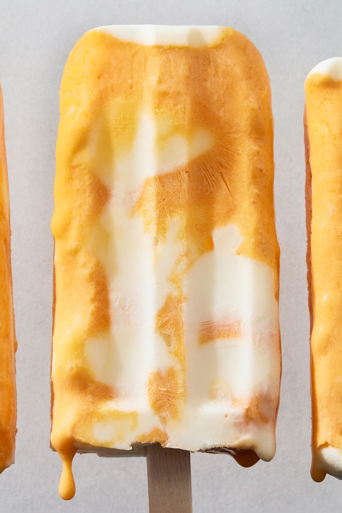

Homemade Creamsicles

What are we cooking today?
Feeling nostalgic? Bring back your childhood memories with a batch of these delicious homemade orange Creamsicle bars. Super-simple to make, these frozen bars are a refreshing, easy dessert to enjoy on those too-hot summer days.
Ingridients & Equipment
Cooking Time!
Orange Base
- In a blender, blend orange juice concentrate, cream, granulated sugar, vanilla, and salt on medium-low speed until combined.
- Add a little bit of food coloring (if using) and continue to blend until desired color is reached. Transfer to a medium bowl. Cover and refrigerate until ready to use.
Vanilla Yogurt Base & Assembly
- In another medium bowl, whisk yogurt, cream, granulated sugar, vanilla, and salt. Cover and refrigerate until ready to use.
- Pour 1 heaping tablespoon yogurt base into a 3-oz. ice pop mold, then pour in 1 tablespoon orange base. Repeat with yogurt and orange bases until you have 10 ice pops. Cover and insert sticks. Freeze until firm, at least 8 hours or up to overnight.
- Dip molds briefly into warm water to release pops.
See how to make: Cinnamon Buns
See how to make: Strawberry Crunch Poke Cake
Home Page